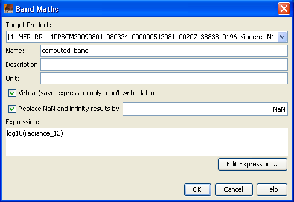

| Band Maths | |
The band maths tool is used to create new image sample values derived from existing bands, tie-point grids and flags. The source data can originate from all currently open and spatially compatible input products. The source data is combined by arbitrary mathematical expression to generate the target data. By default, a new image view is automatically opened for the new sample values. You can disable this behaviour in the preferences dialog.
Please refer to the Maths Expression Editor documentation for the syntax and capabilities of band maths expressions.
After the new band has been created (or an existing has been overwritten), you can change to VISAT's Product Browser in order to open an image view in order to inspect the resulting samples.

Target Product:
Select the target product where the new band will be added.
Name:
Specifies the name of the new band. The name must not be empty and the target product must not contain a
band with the same name.
Description:
An optional description can be entered here.
Unit:
An optional unit can be entered here.
Spectral Wavelength:
An optional spectral wavelength may be provided in order to visualize
the new band in the Spectrum View.
Virtual (save expression only, don't write data)
If the option is checked a virtual band is created.
This means that only the expression is stored and the data is re-computed if needed.
If this option is unchecked, the data is computed once and stored in the product.
Replace NaN and infinity results by
Sometimes an expression can result to a NaN (Not a Number)or infinity value, in these
cases these values will be replaced by the value specified here. This value will also be used
as the no-data value of the band.
Expression:
This field takes the maths expression which is used to create new data
samples. Please refer to the Maths Expression Editor
documentation for the syntax and capabilities of expressions.
Edit Expression...
Opens the Maths Expression Editor which provides a
a convenient way to create valid band maths expressions.
Note: If you create a virtual band and reference multiple products within your expression, you should consider to store your current Session in order to keep all the references valid. Otherwise it might happen that the expression can not be parsed anymore, because the referenced products can not be found.
OK
Computes the new sample data and closes the dialog. Refer to the preferences dialog for an option to
specify whether or not to automatically open an image view for the new data samples.
Cancel
Closes the dialogue and all changes are reverted.
Help
Opens this help page.